Толковый словарь живого великорусского языка · Том 1
ЗАМОЛОДЕ́ЛО ср. глаг.
1. о том, что постарело, отжило свой век — «мост замолодел»
2. новгородск. о старом, изношенном
сравн.: застарелое · перестарелое · стлб. 431
Интерактивная лекция · история справочных изданий
Как человечество 4500 лет собирает знания в одну книгу — и почему идея словаря старше алфавита.
Первые словари создавались на глиняных табличках: шумеры записывали значения слов, чтобы понимать друг друга в торговле и дипломатии.
Это произошло почти 4500 лет назад.
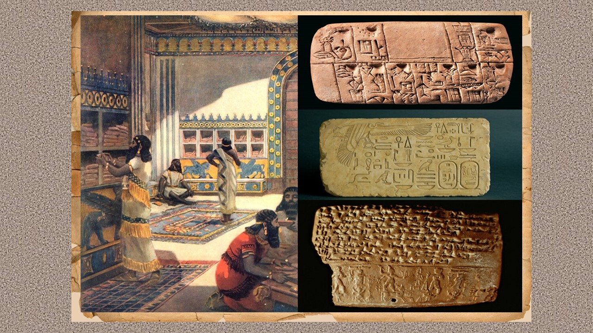
В 77 году римлянин Плиний Старший собрал 37 книг обо всём на свете — «Естественную историю».
Он назвал свой труд греческим словом, означавшим «всестороннее обучение», — именно отсюда родилось слово «энциклопедия».
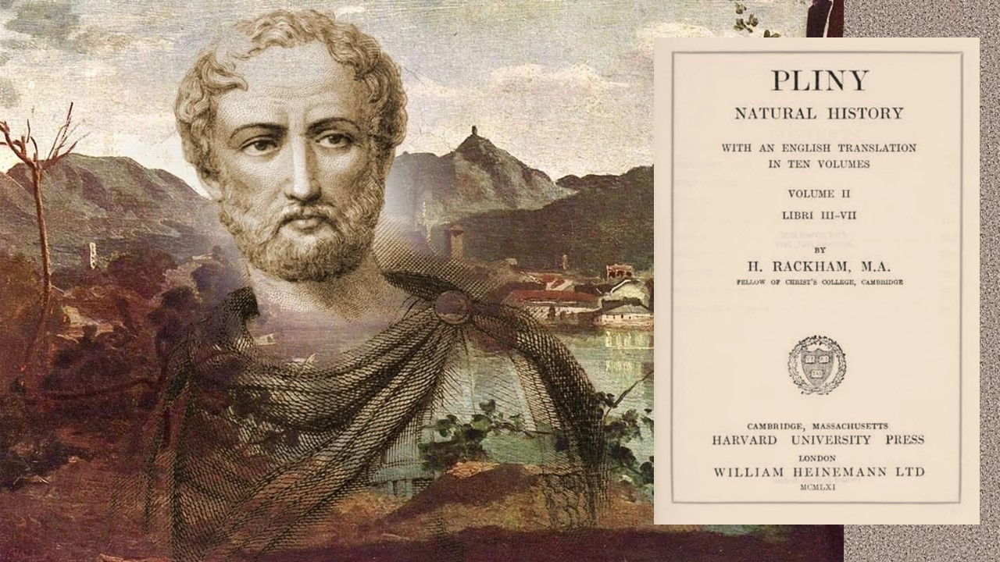
В 1408 году 2000 китайских учёных завершили гигантский труд: 11 095 томов, в которых использовано 370 миллионов иероглифов.
«Энциклопедия Юнлэ» — самая большая бумажная энциклопедия в истории. Увы, до нас дошло лишь 4% текста.
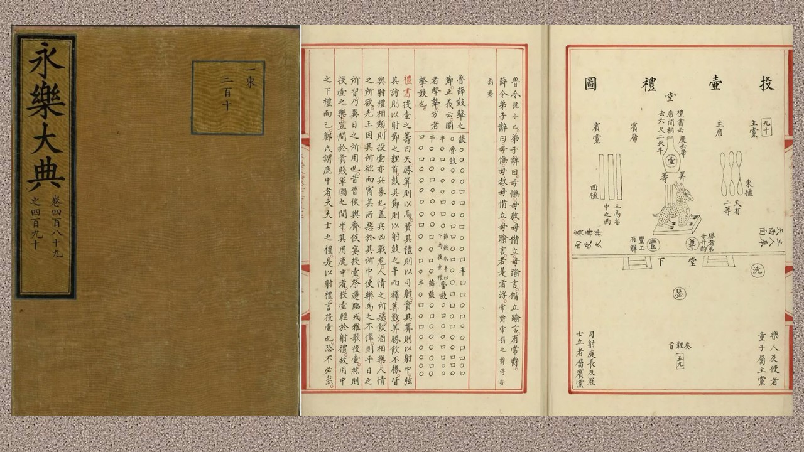
Книгу запрещали,
а рукописи жгли
В 1751 году во Франции вышел первый том «Энциклопедии» Дидро и Д’Аламбера — 35 томов, 71 818 статей. Церковь её запрещала, цензоры изымали материалы.
И всё равно издание вышло — и стало символом Просвещения.
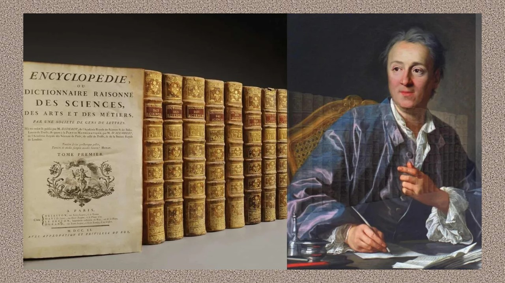
В XIX веке вышли сразу четыре проекта, которые задали стандарты на двести лет вперёд — разные страны, один принцип: знание должно быть проверено и систематизировано.
Знаменитая шотландская энциклопедия — эталон академичности.
1768 · ШотландияТруд «отца» американского правописания: язык отдельной страны.
1828 · СШАСобран при участии волонтёров со всего мира — краудсорсинг до интернета.
с 1857 · ВеликобританияМодель «короткие статьи + много фактов» — её позже использовали многие издатели.
1791 · Германия → 1890 · Россия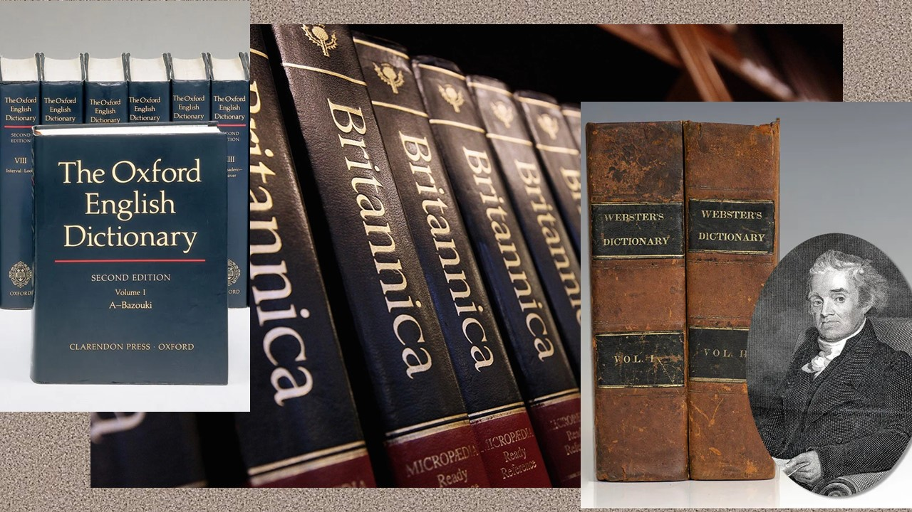
В 1955 году из спора директора пивоварни — что быстрее, гусь или ржанка — родилась «Книга рекордов Гиннесса».
А в 2001 году появилась Википедия — первая энциклопедия, которую может редактировать каждый. Сегодня это самый большой свод знаний в истории человечества.
из этого спора вырос «Гиннесс»
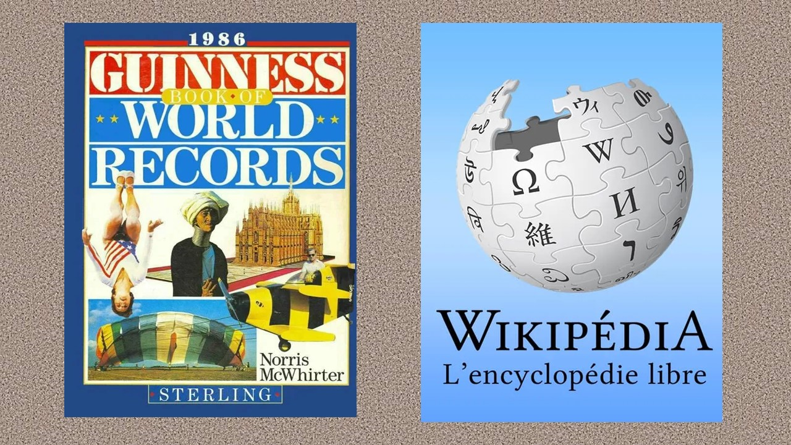
Первая подсказка —
на полях рукописи
Настоящих словарей на Руси ещё не было, зато были азбуковники — рукописные сборники, где объясняли непонятные слова, имена святых и даже драгоценные камни.
Самый ранний из дошедших датируется 1272 годом и объясняет всего 174 слова.
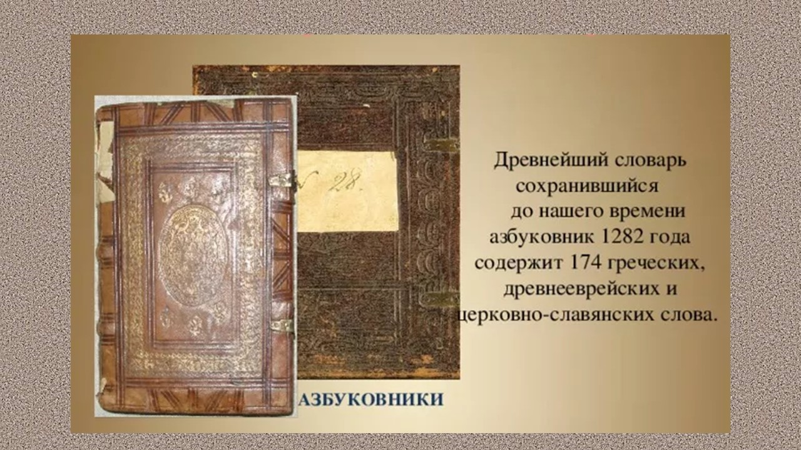
Первая настоящая русская энциклопедия слова родилась при Екатерине II. Её подруга и первый президент Российской академии княгиня Дашкова привлекла к работе над словарём лучших людей эпохи.
Плюс писатели и государственные деятели — и золотые медали создателям.
«Российскому слову отличную пользу принесшему»
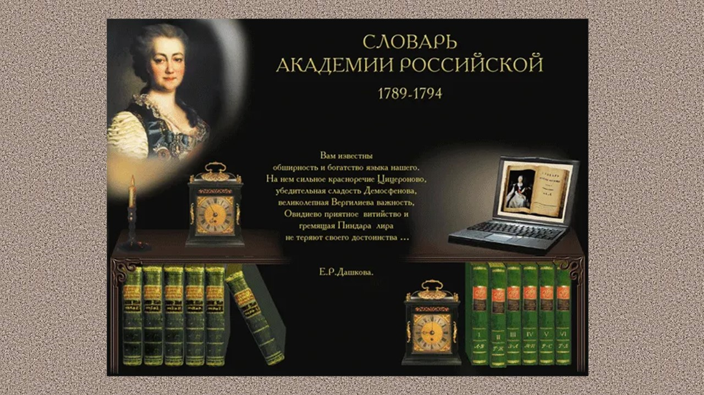
Полвека жизни Даль посвятил одному делу — собиранию слов. При этом филологического образования у него не было: Даль был самоучкой.
Результат — 4 тома толкового словаря с диалектами, ремесленной лексикой и приметами.
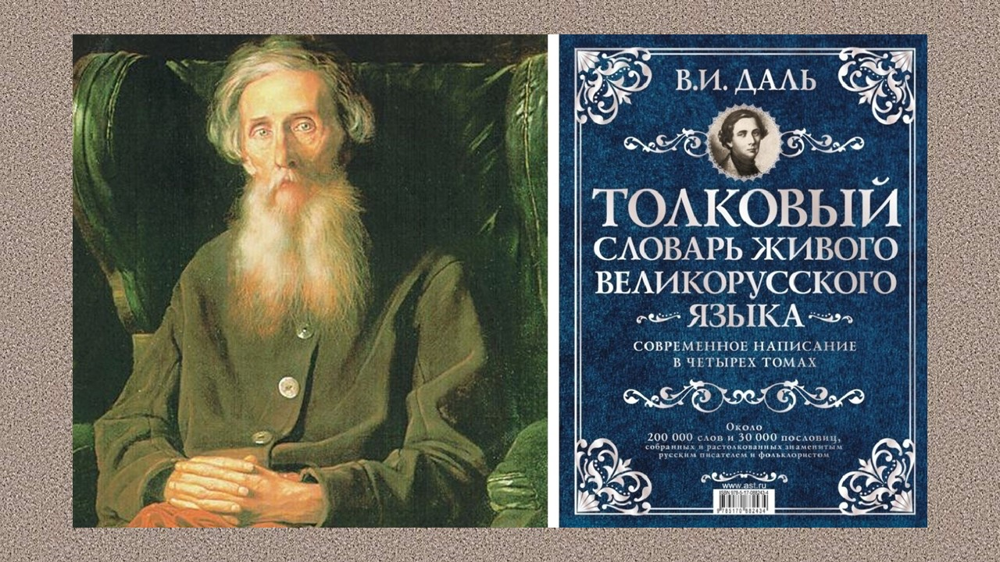
Толковый словарь живого великорусского языка · Том 1
ЗАМОЛОДЕ́ЛО ср. глаг.
1. о том, что постарело, отжило свой век — «мост замолодел»
2. новгородск. о старом, изношенном
сравн.: застарелое · перестарелое · стлб. 431
С энциклопедиями в России долго не везло. Многие издания запрещались, закрывались, критиковались — но не сдавались!
И вот в конце XIX века появился энциклопедический словарь «Брокгауз и Ефрон» — вершина дореволюционной энциклопедистики.
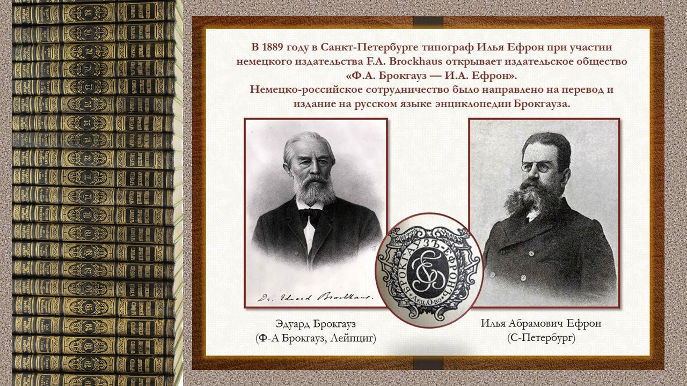
В 1935–1940 годах под руководством Дмитрия Ушакова вышли 4 тома — 85 289 слов.
А в 1949-м Ожегов выпустил свой однотомник — тот самый, который переиздавался больше 26 раз и стал в буквальном смысле «настольной книгой» для многих поколений.
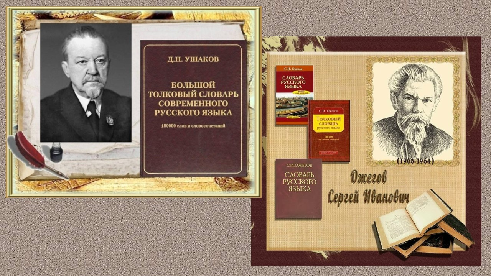
«Большая советская энциклопедия» — идея академика и полярника Отто Шмидта. Она стала самым масштабным энциклопедическим проектом страны.
До сих пор БСЭ заслуженно остаётся самым авторитетным справочным изданием в библиотеках России.
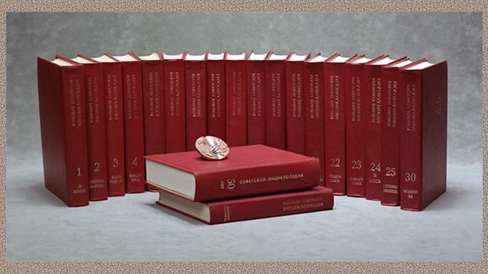
С 2005 года выходит преемница БСЭ — БРЭ, последний большой бумажный энциклопедический проект России. Её объём — 36 томов. Дальше цифровая эра: знания переезжают на экраны.
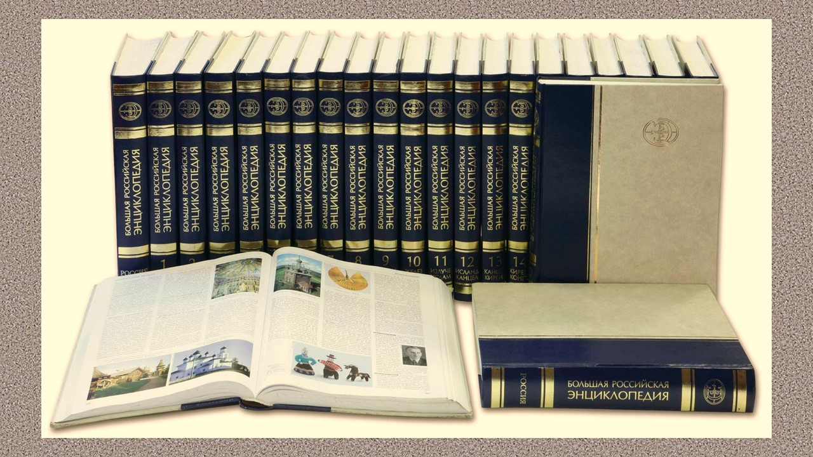
Сначала — понять друг друга.
Потом — весь мир.
спасибо за внимание · в начало